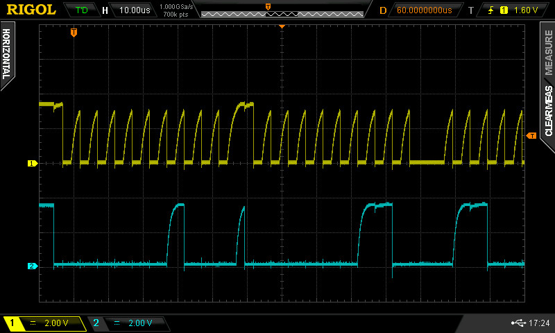
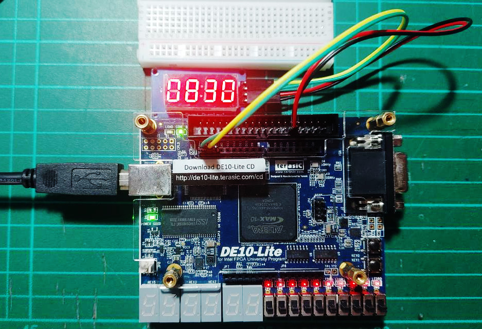

Tutorial: TM1637-based 7-Segment Display Module#
TM1637 IC#
Time-multiplexing is a technique that helps reduce the number of control pins needed for multi-digit 7-segment displays, while keeping full control over each individual digit. Nowadays, there are specialized LED driver/controller ICs designed for these displays, like the TM1637 and TM1640, which can also handle dot-LED matrices.
In this tutorial, we will use the TM1637 IC to drive a 4-digit 7-segment display module, which is usually set up in a common-anode configuration (not common-cathode). The TM1637 connects with a microcontroller or an FPGA using just two signal lines: a clock line (CLK) and a bidirectional data line (DIO). Don’t forget, both lines need external pull-up resistors, typically around 10kΩ.
TM1637-based 4-Digit 7-Segment Display Module#
The figure below shows a 4-digit 7-segment display module that
operates with the TM1637 chip as its controller or driver.
Depending on the model, there are different digit sizes (like 0.36" or 0.56"),
and some versions come with decimal points (.) for each digit or colon symbols (:), which are quite handy for showing time in a digital clock format.

Figure: TM1637-based 4-digit 7-segment module

Figure: Schematic example of a TM1637-based 7-segment display module
Note:
- Although the VCC of the TM1637-based display module is rated at "+5V", it often operates reliably at +3.3V as well (but with less brightness).
TM1637 Programming#
The figure below shows the sequence of sending command and data bytes to the TM1637 IC. This process is used to write display data into the TM1637’s internal SRAM, starting from a specified address and automatically incrementing for subsequent data bytes.

Figure: Write SRAM data process
The protocol follows a structured sequence of start conditions, commands, data transfers, and acknowledgments (ACKs) over the CLK and DIO lines.
- Start Condition: The host (MCU or FPGA) begins communication with a start condition (falling edge of
DIOwhileCLKis high). - Command1 = Set Data Command (
0x40): This step sends a data command byte that enables auto-increment mode. - Command2 = Set Address Command (
0xC0): This step sends an address command byte to specify the starting SRAM address where display data will be written. - Display Data Bytes: This step sequentially writes 1 to N data bytes to the display. Each byte corresponds to the segment pattern for one digit. The TM1637 auto-increments the address after each byte.
- Command3 = Display Control Command This sends a command to set the brightness level and turn display on.
- Stop Condition:
A stop condition is sent by the host to finish communication.
This occurs when
DIOgoes high whileCLKis high.

Figure: Options for data set command

Figure: Options for address set command

Figure: Options for the display control command
VHDL Coding Examples for FPGA#
This VHDL module (tm1637_driver) implements a low-level driver for the TM1637 LED controller IC. It has the following control/status signals.
START: Begins a write transactionSTOP: Indicates if the current byte is the lastDC: Select either data or command byte to transmitDONE: Signals the end of the transactionACK: Indicates acknowledgment from the TM1637
The CLK and DIO are bidirectional I/O signals for the TM1637 IC.
TM_CLK : INOUT STD_LOGIC;
TM_DIO : INOUT STD_LOGIC;
These lines are open-drain (open-collector), they can only be driven low or released (high-Z). Pull-up resistors pull them high when not driven.
-- File: tm1637_driver.vhd
LIBRARY IEEE;
USE IEEE.STD_LOGIC_1164.ALL;
USE IEEE.NUMERIC_STD.ALL;
ENTITY tm1637_driver IS
PORT (
CLK : IN STD_LOGIC;
RST_N : IN STD_LOGIC;
START : IN STD_LOGIC; -- start write operation
STOP : IN STD_LOGIC;
DC : IN STD_LOGIC_VECTOR(7 DOWNTO 0); -- data or cmd byte
TM_CLK : INOUT STD_LOGIC;
TM_DIO : INOUT STD_LOGIC;
DONE : OUT STD_LOGIC;
ACK : OUT STD_LOGIC -- ACK or NACK status
);
END tm1637_driver;
ARCHITECTURE behavioral OF tm1637_driver IS
TYPE state_type IS (
ST_IDLE,
ST_START,
ST_SHIFT_CLK_L,
ST_SHIFT_CLK_H,
ST_ACK,
ST_READ_ACK,
ST_STOP,
ST_DONE
);
SIGNAL state : state_type := ST_IDLE;
SIGNAL next_state : state_type := ST_IDLE;
SIGNAL bit_cnt : INTEGER RANGE 0 TO 7 := 0;
SIGNAL shift_reg : STD_LOGIC_VECTOR(7 DOWNTO 0) := (OTHERS => '0');
-- Output control signals
SIGNAL tm_clk_oe : STD_LOGIC := '0'; -- 1 = drive, 0 = high-Z
SIGNAL tm_dio_oe : STD_LOGIC := '0'; -- 1 = drive, 0 = high-Z
-- Clock divider: adjust for target frequency
--CONSTANT CLK_DIV : INTEGER := 125;
CONSTANT CLK_DIV : INTEGER := 1000;
--CONSTANT CLK_DIV : INTEGER := 5000;
SIGNAL clk_count : INTEGER RANGE 0 TO CLK_DIV - 1 := 0;
SIGNAL clk_en : STD_LOGIC := '0';
-- ACK read
SIGNAL ack_bit : STD_LOGIC := '1';
SIGNAL stop_bit : STD_LOGIC := '1';
BEGIN
-- Assign outputs
TM_CLK <= '0' WHEN tm_clk_oe = '1' ELSE 'Z';
TM_DIO <= '0' WHEN tm_dio_oe = '1' ELSE 'Z';
ACK <= ack_bit;
-- Clock Divider: Generate clk_en pulse
clk_div_proc : PROCESS (RST_N, CLK)
BEGIN
IF RST_N = '0' THEN
clk_count <= 0;
clk_en <= '0';
ELSIF rising_edge(CLK) THEN
IF clk_count = CLK_DIV - 1 THEN
clk_count <= 0;
clk_en <= '1';
ELSE
clk_count <= clk_count + 1;
clk_en <= '0';
END IF;
END IF;
END PROCESS;
-- FSM Process
fsm_proc : PROCESS (RST_N, CLK)
BEGIN
IF RST_N = '0' THEN
state <= ST_IDLE;
tm_clk_oe <= '0';
tm_dio_oe <= '0';
bit_cnt <= 0;
ack_bit <= '1';
stop_bit <= '1';
DONE <= '1';
ELSIF rising_edge(CLK) THEN
IF clk_en = '1' THEN
CASE state IS
WHEN ST_IDLE =>
DONE <= '1';
tm_clk_oe <= '0'; -- CLK 'H'
tm_dio_oe <= '0'; -- DIO 'H'
IF START = '1' THEN
state <= ST_START;
END IF;
WHEN ST_START =>
DONE <= '0';
stop_bit <= STOP;
shift_reg <= DC;
tm_dio_oe <= '1'; -- DIO '0'
bit_cnt <= 0;
state <= ST_SHIFT_CLK_L;
WHEN ST_SHIFT_CLK_L =>
tm_clk_oe <= '1'; -- CLK '0'
state <= ST_SHIFT_CLK_H;
tm_dio_oe <= NOT shift_reg(0); -- LSB first
shift_reg <= '0' & shift_reg(7 DOWNTO 1);
WHEN ST_SHIFT_CLK_H =>
tm_clk_oe <= '0'; -- CLK 'H'
IF bit_cnt = 7 THEN
state <= ST_ACK;
ELSE
bit_cnt <= bit_cnt + 1;
state <= ST_SHIFT_CLK_L;
END IF;
WHEN ST_ACK =>
tm_clk_oe <= '1'; -- CLK '0'
tm_dio_oe <= '0'; -- release line
DONE <= '1';
state <= ST_READ_ACK;
WHEN ST_READ_ACK =>
ack_bit <= TM_DIO; -- read ACK
tm_dio_oe <= '1'; -- DIO '0'
tm_clk_oe <= '0'; -- CLK 'H'
state <= ST_DONE;
WHEN ST_DONE =>
tm_dio_oe <= '1'; -- DIO '0'
tm_clk_oe <= '1'; -- CLK '0'
state <= ST_STOP;
WHEN ST_STOP =>
IF stop_bit = '0' THEN
tm_clk_oe <= '1'; -- CLK '0'
state <= ST_START;
ELSE
tm_clk_oe <= '0'; -- CLK 'H'
state <= ST_IDLE;
END IF;
WHEN OTHERS =>
state <= ST_IDLE;
END CASE;
END IF;
END IF;
END PROCESS;
END behavioral;
This VHDL module demonstrates how to control a 4-digit 7-segment display
using the TM1637 driver IC.
It instantiates a lower-level module (tm1637_driver) to manage
the serial communication protocol, and implements a simple decimal counter
(ranging from 0 to 9999) that updates periodically.
The counter value is converted to 7-segment format and sent
to the TM1637 display module.
-- File: tm1637_driver_demo.vhd
LIBRARY IEEE;
USE IEEE.STD_LOGIC_1164.ALL;
USE IEEE.NUMERIC_STD.ALL;
ENTITY tm1637_driver_demo IS
PORT (
CLK : IN STD_LOGIC;
RST_N : IN STD_LOGIC;
TM_CLK : INOUT STD_LOGIC;
TM_DIO : INOUT STD_LOGIC
);
END tm1637_driver_demo;
ARCHITECTURE behavioral OF tm1637_driver_demo IS
-- TM1637 driver interface
SIGNAL start : STD_LOGIC := '0';
SIGNAL stop : STD_LOGIC := '1';
SIGNAL done : STD_LOGIC;
SIGNAL ack : STD_LOGIC;
SIGNAL dc : STD_LOGIC_VECTOR(7 DOWNTO 0); -- DATA / CMD byte
-- FSM
TYPE state_type IS (
ST_INIT, ST_LOAD, ST_SEND, ST_WAIT_START, ST_WAIT_DONE, ST_DELAY
);
SIGNAL state : state_type := ST_INIT;
SIGNAL index : INTEGER RANGE 0 TO 6 := 0;
CONSTANT DELAY_CNT_MAX : INTEGER := 5_000_000 - 1;
SIGNAL delay_cnt : INTEGER RANGE 0 TO DELAY_CNT_MAX := 0;
-- Counter for display
SIGNAL count : INTEGER RANGE 0 TO 9999 := 0;
SIGNAL digit0 : INTEGER RANGE 0 TO 9 := 0; -- Units
SIGNAL digit1 : INTEGER RANGE 0 TO 9 := 0; -- Tens
SIGNAL digit2 : INTEGER RANGE 0 TO 9 := 0; -- Hundreds
SIGNAL digit3 : INTEGER RANGE 0 TO 9 := 0; -- Thousands
-- TM1637 data sequence (7 commands total)
TYPE data_array IS ARRAY (0 TO 6) OF STD_LOGIC_VECTOR(7 DOWNTO 0);
SIGNAL data_seq : data_array;
-- 7-segment encoding function
FUNCTION to_7seg(val : INTEGER) RETURN STD_LOGIC_VECTOR IS
BEGIN
CASE val IS
WHEN 0 => RETURN "00111111";
WHEN 1 => RETURN "00000110";
WHEN 2 => RETURN "01011011";
WHEN 3 => RETURN "01001111";
WHEN 4 => RETURN "01100110";
WHEN 5 => RETURN "01101101";
WHEN 6 => RETURN "01111101";
WHEN 7 => RETURN "00000111";
WHEN 8 => RETURN "01111111";
WHEN 9 => RETURN "01101111";
WHEN OTHERS => RETURN "00000000";
END CASE;
END FUNCTION;
BEGIN
-- TM1637 Driver Instance
driver_inst : ENTITY work.tm1637_driver
PORT MAP(
CLK => CLK,
RST_N => RST_N,
START => start,
STOP => stop,
DC => dc,
TM_CLK => TM_CLK,
TM_DIO => TM_DIO,
DONE => done,
ACK => ack
);
-- FSM Process
PROCESS (CLK, RST_N)
BEGIN
IF RST_N = '0' THEN
state <= ST_INIT;
start <= '0';
stop <= '1';
index <= 0;
delay_cnt <= 0;
count <= 0;
ELSIF rising_edge(CLK) THEN
CASE state IS
WHEN ST_INIT =>
start <= '0';
stop <= '1';
index <= 0;
state <= ST_LOAD;
WHEN ST_LOAD =>
-- Split count into BCD digits
digit0 <= count MOD 10;
digit1 <= (count / 10) MOD 10;
digit2 <= (count / 100) MOD 10;
digit3 <= (count / 1000) MOD 10;
-- Prepare TM1637 command/data sequence
data_seq(0) <= x"40"; -- CMD1: normal write
data_seq(1) <= x"C0"; -- CMD2: start address
data_seq(2) <= to_7seg(digit3); -- leftmost digit
data_seq(3) <= to_7seg(digit2);
data_seq(4) <= to_7seg(digit1);
data_seq(5) <= to_7seg(digit0); -- rightmost digit
data_seq(6) <= x"8F"; -- CMD3: display ON (max. brightness)
state <= ST_SEND;
WHEN ST_SEND =>
dc <= data_seq(index);
start <= '1';
-- Only stop for command or last byte
IF index = 0 OR index = 5 OR index = 6 THEN
stop <= '1';
ELSE
stop <= '0';
END IF;
state <= ST_WAIT_START;
WHEN ST_WAIT_START =>
IF done = '0' THEN
start <= '0';
state <= ST_WAIT_DONE;
END IF;
WHEN ST_WAIT_DONE =>
IF done = '1' THEN
IF index = 6 THEN
state <= ST_DELAY;
delay_cnt <= DELAY_CNT_MAX;
ELSE
index <= index + 1;
state <= ST_SEND;
END IF;
END IF;
WHEN ST_DELAY =>
IF delay_cnt = 0 THEN
IF count = 9999 THEN
count <= 0;
ELSE
count <= count + 1;
END IF;
state <= ST_INIT;
ELSE
delay_cnt <= delay_cnt - 1;
END IF;
WHEN OTHERS =>
state <= ST_INIT;
END CASE;
END IF;
END PROCESS;
END behavioral;
The following Tcl script defines the pin assignments for the DE10-Lite FPGA board.
# File: assignments.tcl
#============================================================
# CLOCK (MAX10_CLK1_50)
#============================================================
set_instance_assignment -name IO_STANDARD "3.3-V LVTTL" -to CLK
set_location_assignment PIN_P11 -to CLK
#============================================================
# Push Buttons (KEY)
#============================================================
set_instance_assignment -name IO_STANDARD "3.3 V SCHMITT TRIGGER" -to RST_N
set_location_assignment PIN_B8 -to RST_N
#============================================================
# Arduino I/O 14 & 15
#============================================================
set_instance_assignment -name IO_STANDARD "3.3-V LVTTL" -to TM_CLK
set_instance_assignment -name IO_STANDARD "3.3-V LVTTL" -to TM_DIO
set_location_assignment PIN_AB21 -to TM_CLK
set_location_assignment PIN_AA20 -to TM_DIO
#set_instance_assignment -name WEAK_PULL_UP_RESISTOR ON -to TM_CLK
#set_instance_assignment -name WEAK_PULL_UP_RESISTOR ON -to TM_DIO
#============================================================
The following are the sample waveforms of CLK and DIO
measured by a digital oscilloscope.


Figure: Waveforms measured by a digital oscilloscope
The following are sample waveforms of the CLK and DIO signals, captured using a digital oscilloscope.
Note that the clock rate of the TM1637 interface is limited (up to 450kHz), and it also depends on the values of the pull-up resistors and any filtering capacitors used on the lines.

Figure: DE10 Lite FPGA board + TM1637-based 7-segment 4-digit display module
This work is licensed under a Creative Commons Attribution-ShareAlike 4.0 International License.
Created: 2025-06-18 | Last Updated: 2025-06-18